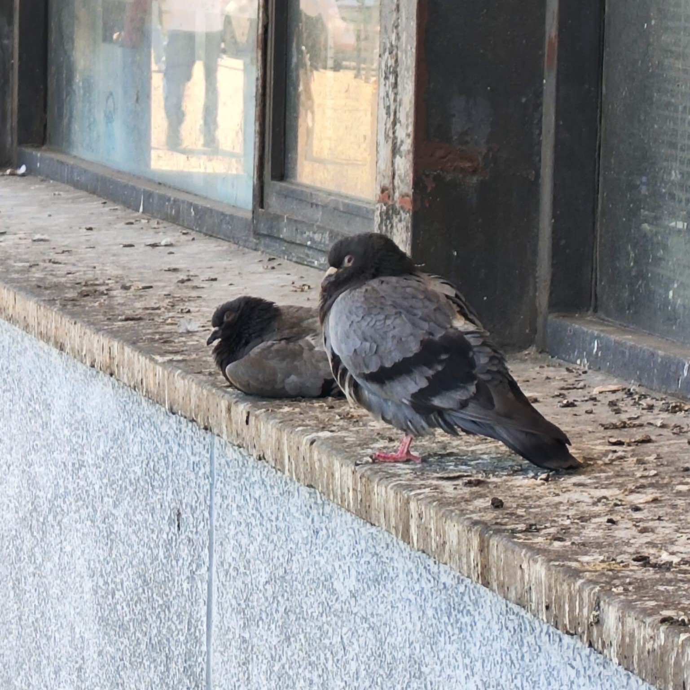
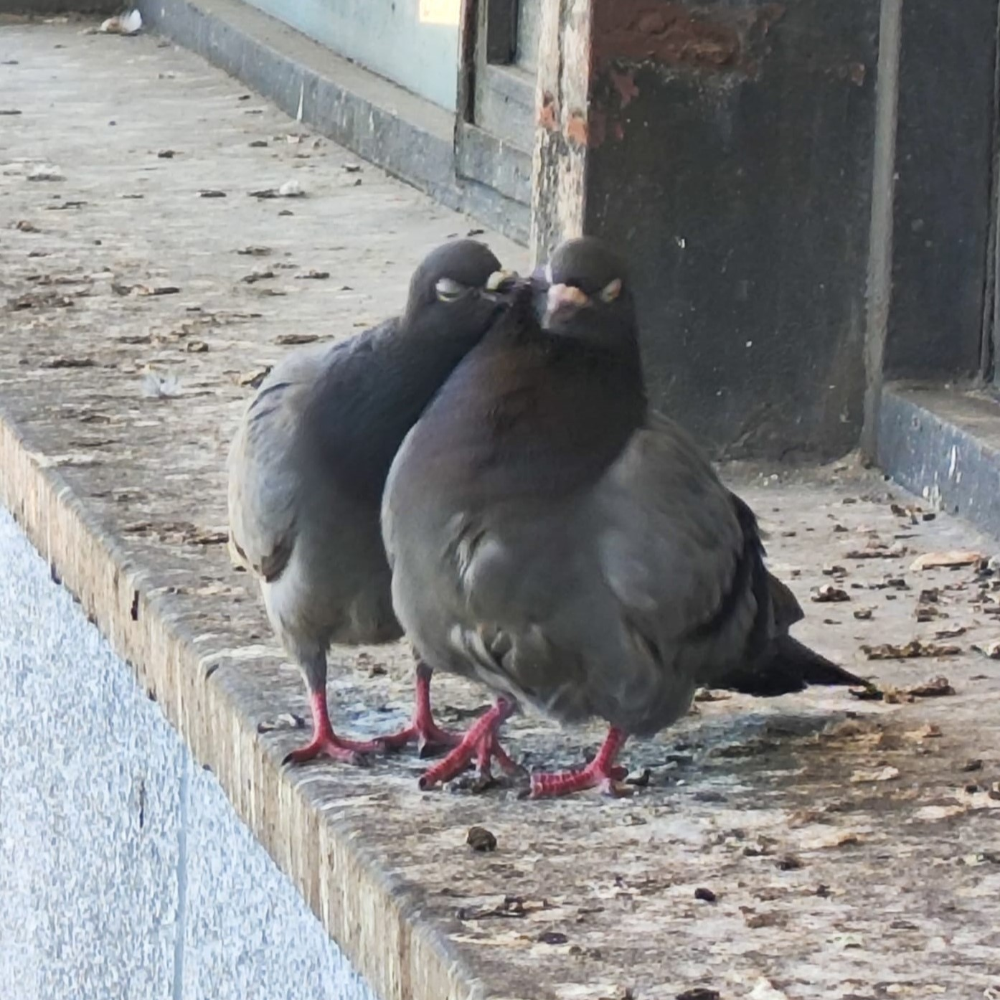

Gołębie są ptakami, które obecnie królują w wielu miastach świata. Możesz pojechać na drugi koniec globu, a na pewno spotkasz tam znajomego ptaka. Mało osób zdaje sobie sprawę, jak niezwykłe to zwierzęta. Często oskarżane są o roznoszenie chorób, nazywane nawet “latającymi szczurami”, jednak na tyle inteligentne, żeby wyprzeć inne ptaki z terenów silnie zaludnionych i żyć w towarzystwie ludzi.


| Budowa ciała | Krępa budowa ciała, mała głowa i dziób, nabrzmiała woskówka u nasady dzioba. |
| Upierzenie | Dominują szarości, brązy i róż; wyraźnie odcinające się obszary na szyi, skrzydłach lub ogonie. |
| Miękkie i gęste, zapewnia dobrą izolację. | |
| Rozmiary | Długość ciała 15–75 cm, masa 30–2000 g. |
| Pożywienie | Głównie roślinne – nasiona, owoce, zielone liście, czasem bezkręgowce; połykają kamyki (gastrolity). |
| Zachowanie | Piją, wsysając wodę przez dziób. Latają szybko i sprawnie. |
| Gniazdowanie | Budują platformy z drobnych gałązek. Zniesienie liczy najczęściej 2 jaja. |
| Opieka nad młodymi | Oboje rodzice wysiadują jaja (13-18 dni), karmią młode ptasim mleczkiem. |
Źródło: Wikipedia – Gołębiowate
Ciekawostka:
Charakterystyczny świszczący dźwięk, który wydają skrzydła gołębi, gdy te wzbijają się w powietrze, mogą służyć jako sygnał ostrzegawczy. Gołębie rozróżniają dźwięki, które powstają wskutek spokojnego odlatywania i tego gwałtownego. W ten sposób pojedynczy osobnik może poinformować całe stado o zagrożeniu.Źródło: hodujegolebie.pl – 5 ciekawostek na temat gołębi
Systematyka
Do rodziny gołębiowatych należą następujące podrodziny:- Claravinae Todd, 1913 – siniaczki
- Columbinae Leach, 1819 – gołębie
- Raphinae Wetmore, 1930 – trerony
- Microgoura Rothschild, 1904
- Jedynym przedstawicielem jest wymarły na początku XX wieku Microgoura meeki Rothschild, 1904 – korończyk.
- Cryptophaps Salvadori, 1893
- Jedynym przedstawicielem jest Cryptophaps poecilorrhoa Brüggemann, 1876 – rotangowiec.
- Starnoenas Bonaparte, 1838
- Jedynym przedstawicielem jest Starnoenas cyanocephala Linnaeus, 1758 – modrogłowik.
Źródło: Wikipedia – Gołębiowate
Ile lat żyją gołębie?
Długość życia gołębia jest tak zróżnicowana jak same rasy tych ptaków. Dzikie gołębie miejskie, które często można spotkać w miejskim zgiełku, żyją przeciętnie 3 do 5 lat. Są to warunki, gdzie ryzyko drapieżnictwa, chorób i braku pożywienia jest znaczące. Z drugiej strony, rasowe gołębie hodowlane, zazwyczaj żyjące w kontrolowanych warunkach, mogą cieszyć się życiem dwa lub trzy razy dłuższym. Rzeczywista długość życia gołębia będzie więc zależała od jego genetyki, diety i opieki, jaką otrzymuje od swojego właściciela.Interesującym aspektem, który wpływa na żywotność gołębi, jest ich zdolność do adaptacji w różnorodnych środowiskach. Niektóre rasy, jak na przykład gołębie pocztowe, są znane ze swojej wytrzymałości i mogą osiągnąć pokaźny wiek, jeśli są właściwie pielęgnowane. Poznanie specyfiki każdej rasy pozwala na dostosowanie opieki, co bezpośrednio przekłada się na długość ich życia.
Najstarszy gołąb świata to ptak, który według dostępnych źródeł mógł żyć nawet powyżej 30 lat. Jest to rekord absolutny i świadczy o tym, że w idealnych warunkach gołębie mogą być niezwykle długowieczne. Tak wysoki wiek jest zazwyczaj zarezerwowany dla ptaków hodowlanych, które przez całe życie są pod ścisłą opieką człowieka. Rekordy długości życia, takie jak w przypadku najstarszego gołębia świata, są rzadkością, ale pokazują potencjał genetyczny tych ptaków dla długowieczności.
Źródło: GołębiMarket - Ile żyje gołąb?